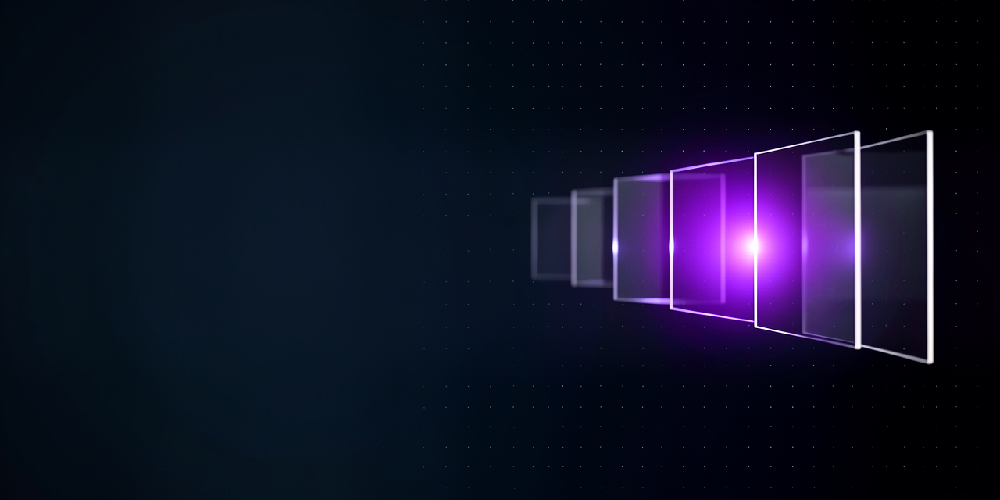

galivelop-image-generator
Prompt
Wide abstract banner on a deep midnight navy background with a faint grid of tiny evenly spaced dots. In the right half, a row of thin rectangular frames of clear glass floats in the dark, slightly overlapping and receding into depth, each holding a soft blurred glow. One frame near the centre of the row shines brighter than the others with a clear violet light that spills softly onto its neighbours. The left half of the frame is a calm, smooth, dark navy surface, nearly empty and softly out of focus. Style: minimal elegant digital art, smooth gradients, soft volumetric light, crisp glass reflections. Colours: deep midnight navy, violet, soft lavender and white highlights. Mood: calm, focused, quietly creative. The image is completely textless.

